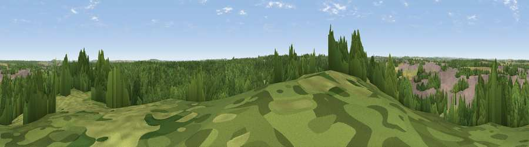

Viewpoint near Clipstone
#31645 in England · top 49% of its area beats it · near ClipstoneThe view, rendered

A 360° render of this exact spot computed from the terrain model, tree cover and land cover — summer colours, afternoon light, calibrated against photographs of famous viewpoints. Real trees, hedges and buildings will differ in detail.
The panorama
Grey silhouette: terrain skyline in each direction (720 bearings, Earth curvature and refraction included). Dashed green: skyline with trees (+15 m) and buildings (+8 m) as obstacles. Blue strip: how far the ground is visible on each bearing.
Where the view opens
Wedge length = distance to the farthest visible ground on that bearing (vegetation-aware). Rings at 10, 25 and 50 km.
What fills the view
51% woodland · 23% grassland · 18% built-up · 9% cropland
Angular shares of the visible panorama (visual magnitude), not map area. Landscape diversity 0.53 (0–1 Shannon).
Key numbers
More beautiful places nearby
The staircase of upgrades: each row has a higher view potential than everything closer. Driving times are estimates from straight-line distance, calibrated against real road routing — check an actual route before setting out.
| Place | Direction | Drive | Score |
|---|---|---|---|
| Viewpoint near Clipstone | SSW · 2 km | ~6 min | 50.7 |
| Viewpoint near Blidworth | S · 7 km | ~14 min | 52.1 |
| Burstheart Hill [Thoresby Colliery] | NE · 7 km | ~15 min | 69.3 |
| Crich Stand | WSW · 26 km | ~41 min | 73.0 |
| Alport Height | WSW · 30 km | ~48 min | 73.9 |
| Viewpoint near Wharncliffe Side | NW · 44 km | ~64 min | 75.2 |
| Tissington Hill | WSW · 45 km | ~65 min | 75.5 |
| Viewpoint near Woodhouse Eaves | S · 48 km | ~69 min | 77.7 |
53.15659, -1.11875 · source: screening · position refined by local search. Computed location — check access rights before visiting.